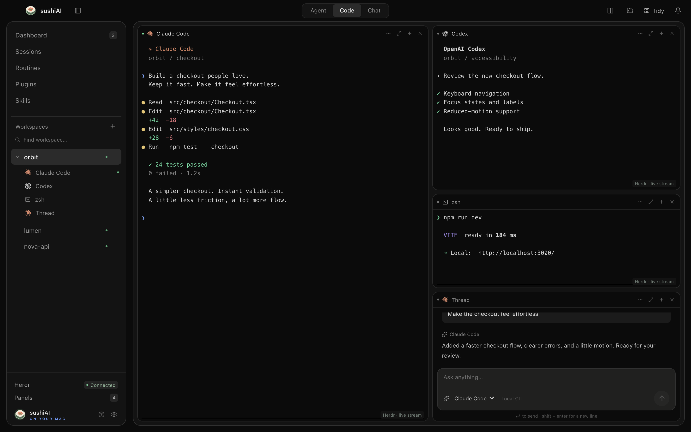
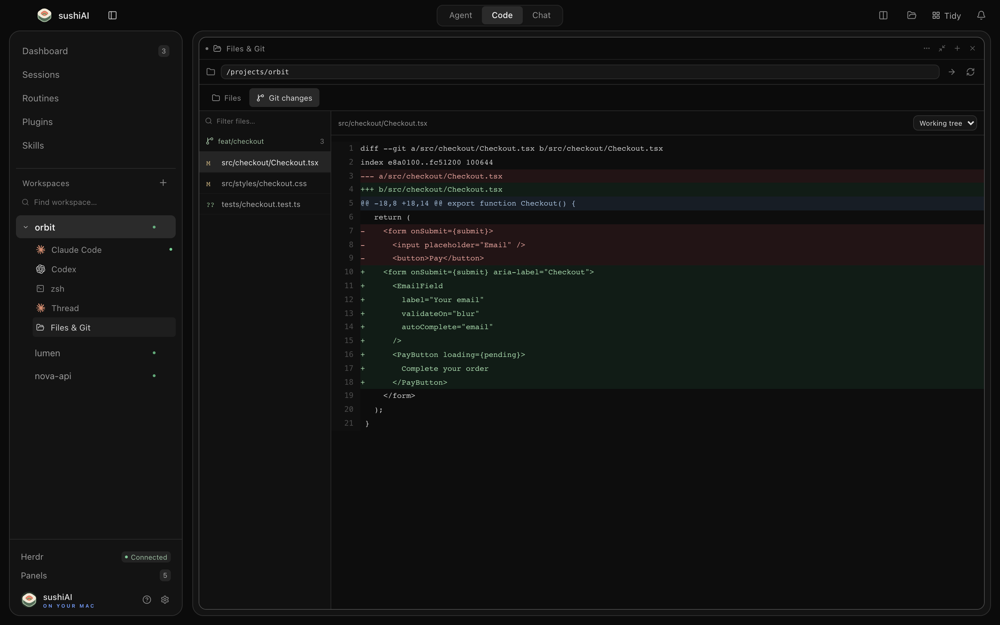
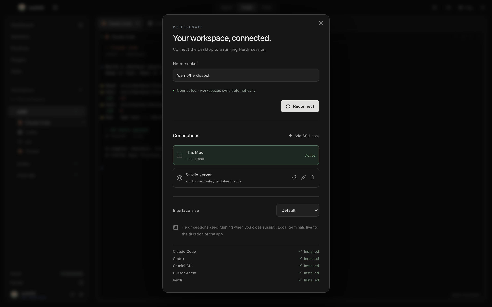
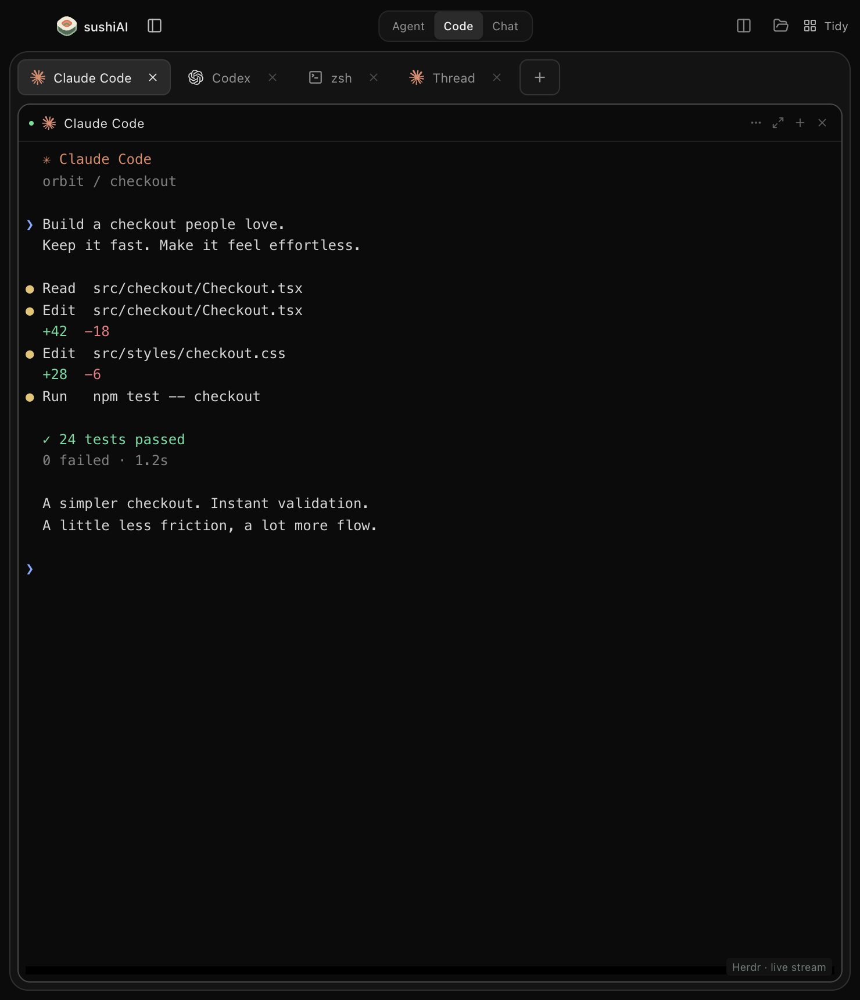

sushiAI
YOUR NEXT IDEA STARTS HERE
A little room. A lot of possibility.
Your agents.
One workspace.
A terminal built around the way you create.
01 / Bring your own agents
One place.
Every harness.
Claude Code, Codex, Gemini.
Your tools. Your accounts. Your flow.
Claude Code
Codex
Gemini

02 / Stay in flow
Real terminals.
Room to move.
Direct Herdr streaming.
Resize, rearrange, keep building.
Live input. Persistent sessions.
03 / Keep the context
Read. Edit.
Review.
Explore files. Save a change.
See the diff. Preview your app.

04 / Beyond your desk
Your Mac.
Your server.
Connect to remote Herdr over SSH.
Bring the whole project into view.
This Mac
Studio server

05 / Make it yours
A workspace
that fits.
Spacious splits. Focused tabs.
Add a session with a keystroke.
Tabs & splits
⌘ K New session

Meet
sushiAI.
Build with your favorite agents.
macOS
Powered by Herdr
MIT licensed
Open source. Yours to build.
sushiAI / THE LAUNCH FILM
SYNTHETIC DEMO · NO PERSONAL DATA